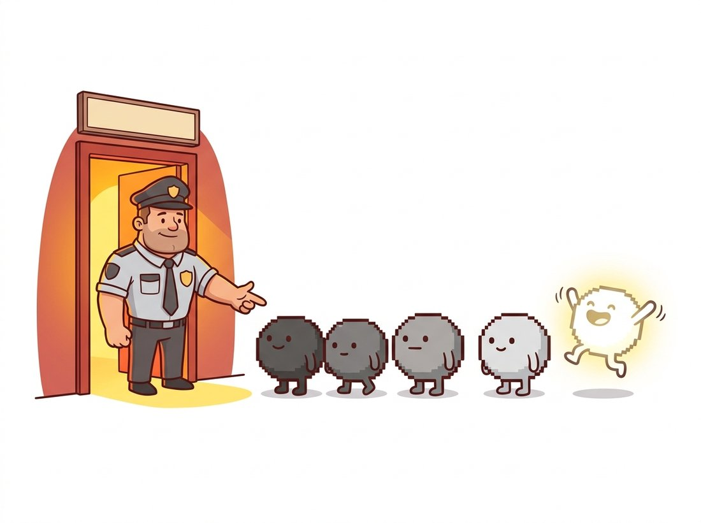

"My therapist says I average things out instead of confronting them. I told her that with enough neighbors, every problem regresses to the mean."
An Exceedingly Mellow Gaussian Filter
Smoothing is a statistical bet: real scenes vary slowly across neighboring pixels while noise varies fast, so averaging neighbors keeps the scene and cancels the noise. This section develops the three smoothers every practitioner needs: the box filter (cheapest), the Gaussian (the principled default, and the most-executed filter in computer vision), and the median (a nonlinear order-statistic filter that does what no weighted average can). Smoothing is also the first move of nearly everything downstream: derivative filters in Section 3.4 fail on unsmoothed images, and the denoising story begun here grows into image restoration in Chapter 7 and, astonishingly, into the training objective of diffusion models in Chapter 33.
The previous section built the sliding-window machinery and showed that the kernel weights determine the behavior. This section commits to the first and most common choice of weights: all of them positive, summing to one. Such kernels compute weighted averages, and weighted averages smooth. The question that separates a good smoother from a bad one is subtler than it looks: which average, over which neighborhood, and what happens to the parts of the image that are not noise?
1. Why Averaging Works: The Statistics of Noise Beginner
Recall from Chapter 1 where image noise comes from: photon shot noise, sensor read noise, and quantization, which together make each recorded pixel a noisy measurement of the true scene radiance. Model a pixel as $I(x,y) = s(x,y) + n(x,y)$, where $s$ is the clean signal and $n$ is zero-mean noise with standard deviation $\sigma_n$, independent across pixels. Averaging $N$ such measurements leaves the signal untouched (the average of $s$ is $s$, if $s$ is locally constant) while the noise standard deviation falls to $\sigma_n / \sqrt{N}$. A $3 \times 3$ average is nine measurements: noise drops by a factor of three. A $5 \times 5$ average drops it by five.
That argument contains both the promise and the catch. The promise: noise reduction scales with the square root of the neighborhood size, for free, with nine numbers. The catch sits in the clause "if $s$ is locally constant." Real images are locally constant almost everywhere, but the exceptions, edges and fine texture, are precisely the parts that carry most of the visual information. Averaging across an edge mixes the two sides and produces blur. Every smoother in this section makes some version of this trade, and managing the trade is the art of denoising.
Every averaging filter implicitly assumes the underlying scene varies more slowly than the noise. Where the assumption holds (skies, walls, skin), smoothing is nearly free noise reduction at a rate of $\sqrt{N}$. Where it fails (edges, text, texture), smoothing destroys signal at exactly the locations the eye cares about most. The history of denoising, from the Gaussian filter through the bilateral filter of Section 3.5 to learned denoisers, is the history of making this bet more selectively.
2. The Box Filter Beginner
The box filter (or mean filter) is the uniform average: every weight in a $k \times k$ kernel equals $1/k^2$. It is the filter we used to introduce correlation in Section 3.1, it is the cheapest smoother in existence (Section 3.6 shows it can run in constant time per pixel regardless of $k$, via running sums), and for casual noise knockdown it is fine. OpenCV exposes it as cv2.blur.
But the box has a defect visible to the naked eye: it treats a pixel at the corner of the window as seriously as the center pixel, so the window's hard cutoff imprints itself on the output. Smoothed point lights become little squares, and repeated box filtering produces streaky, blocky artifacts. In the frequency-domain language of Chapter 4, the box filter's spectrum rings: it fails to suppress some high frequencies while distorting mid frequencies. The fix is to let the weights taper smoothly with distance from the center, which is exactly the Gaussian.
3. The Gaussian Filter Intermediate
The Gaussian filter weights each neighbor by a bell curve over its distance from the center, as the right panel of Figure 3.2.1 shows:
$$ G_\sigma(i, j) \;=\; \frac{1}{2\pi\sigma^2}\, \exp\!\left( -\,\frac{i^2 + j^2}{2\sigma^2} \right) $$
The single parameter $\sigma$, the standard deviation in pixels, sets the smoothing scale: detail much finer than $\sigma$ is averaged away, structure much coarser survives. The kernel size is a separate, practical choice: since the bell decays fast, weights beyond about $3\sigma$ are negligible, and the standard recipe is a kernel spanning $\pm 3\sigma$, that is, size $2\lceil 3\sigma \rceil + 1$. A $\sigma$ of 1.5 wants roughly an $11 \times 11$ kernel; pass ksize=(0, 0) to cv2.GaussianBlur and OpenCV computes a suitable size for you.
Three properties make the Gaussian the default smoother of the field rather than just one option among many. First, it is the unique rotationally symmetric filter that is also separable (it factors into a horizontal pass followed by a vertical pass), which makes large-radius Gaussian smoothing cheap; Section 3.6 quantifies the speedup. Second, it cascades cleanly: blurring with $\sigma_1$ and then $\sigma_2$ equals one blur with $\sigma = \sqrt{\sigma_1^2 + \sigma_2^2}$, the property on which the scale spaces and image pyramids of Chapter 4 are built. Third, it introduces no artifacts: smoothing with a wider Gaussian never creates structure that was not in the image, a guarantee (formalized in scale-space theory) that the box filter conspicuously lacks.
Building the kernel from the formula is a five-line exercise, worth doing once to demystify it:
# Build a 2D Gaussian kernel straight from the formula: evaluate the bell
# curve on a grid of pixel offsets, then normalize so the weights sum to 1.
# Applying it with filter2D reuses the Section 3.1 sliding-window machinery.
import numpy as np
import cv2
def gaussian_kernel(size: int, sigma: float) -> np.ndarray:
"""Build a normalized 2D Gaussian kernel of odd size."""
ax = np.arange(size) - size // 2 # e.g. [-2,-1,0,1,2] for size 5
xx, yy = np.meshgrid(ax, ax)
k = np.exp(-(xx**2 + yy**2) / (2.0 * sigma**2))
return k / k.sum() # normalize: weights sum to 1
k = gaussian_kernel(5, sigma=1.0)
print(k.round(3))
# [[0.003 0.013 0.022 0.013 0.003]
# [0.013 0.06 0.098 0.06 0.013]
# [0.022 0.098 0.162 0.098 0.022]
# [0.013 0.06 0.098 0.06 0.013]
# [0.003 0.013 0.022 0.013 0.003]]
img = cv2.imread("portrait.jpg", cv2.IMREAD_GRAYSCALE)
smooth = cv2.filter2D(img, -1, k) # apply with Section 3.1 machineryfilter2D; the printed weights show the center pixel contributing 16.2 percent and the corners 0.3 percent.The twelve lines above (kernel construction plus application) are one library call: cv2.GaussianBlur(img, (0, 0), sigmaX=1.0). Beyond the 12-to-1 reduction, the library version automatically chooses the kernel size from sigma, applies the filter separably (two cheap 1D passes instead of one expensive 2D pass, the optimization derived in Section 3.6), uses fixed-point arithmetic on uint8 inputs, and handles borders and color channels. SciPy users get the same via scipy.ndimage.gaussian_filter(img, sigma=1.0), which additionally supports per-axis sigmas.
Grab any photo and run cv2.GaussianBlur(img, (0, 0), sigmaX=s) for s in [0.5, 1, 2, 4, 8], displaying the five results side by side. Watch two things move in opposite directions as s grows: sensor grain in flat areas (sky, a wall) keeps fading, while real detail (text, eyelashes, a brick seam) dissolves a step later at each setting. Find the largest s at which the detail you care about still survives: that is the sigma this section argues you should ship, and feeling the crossover by eye teaches it faster than the $\sigma_n/\sqrt{N}$ formula does.
Gaussian blur is one of the few image-processing operations with a fan base. It has its own Photoshop legend, an Instagram-era aesthetic ("bokeh-core"), and a starring role in nearly every "frosted glass" UI effect shipped since iOS 7. The same mathematics also describes heat diffusion: Gaussian-blurring an image is exactly what would happen if its brightness values were temperatures left to diffuse for a time proportional to $\sigma^2$.
Reading that noise falls as $\sigma_n/\sqrt{N}$, learners often conclude that smoothing is monotonically beneficial, so a larger kernel or a bigger $\sigma$ is always a better image. In fact the $\sqrt{N}$ rule holds only for the noise; the signal pays a separate, growing price. Every increase in window size blurs detail across a wider band and merges structures that should stay distinct: a $\sigma = 5$ Gaussian that flattens sensor grain also erases eyelashes, text strokes, and the very edges that Section 3.4's derivatives need to find. The right $\sigma$ is the smallest one that knocks the noise below your downstream tolerance, not the largest one you can afford; past that point you are deleting scene content, not noise. The diagnostic question: if you cannot point to the specific detail scale you are willing to lose, your kernel is probably too large.
4. The Median Filter Intermediate
Now consider a different noise regime. Salt-and-pepper noise, from dead pixels, transmission glitches, or extreme sensor events, replaces isolated pixels with values near 0 or 255. Averaging is the wrong response: a single 255 outlier in a $3 \times 3$ window shifts the mean by up to 28 gray levels, smearing the corruption across the neighborhood instead of removing it. What you want is an estimator that ignores outliers entirely. Statistics has one ready: the median. The illustration below captures the idea before the formula does: line the window's values up by brightness and the loud outlier never gets picked.

The median filter replaces each pixel with the median of its window's values. As Figure 3.2.2 illustrates, an outlier in the window lands at the end of the sorted order and simply never gets selected; the output is an actual pixel value from the neighborhood majority. Up to half the window can be corrupted before the median breaks. Note what the median filter is not: it is not a weighted average, not linear, not expressible as any kernel. Our impulse-response analysis from Section 3.1 does not apply to it (filter an impulse and you get all zeros back, as the median of a window containing one bright pixel and eight black ones is black). It is the chapter's first genuinely nonlinear filter, the opening move of a theme that continues with the bilateral filter in Section 3.5.
The experiment below corrupts an image with 5 percent salt-and-pepper noise and compares the two repair strategies head to head, scoring with the peak signal-to-noise ratio (PSNR), the fidelity metric from Chapter 1.
# Compare two repair strategies on salt-and-pepper noise: a linear
# Gaussian blur versus the nonlinear median filter, scored by PSNR.
# The median wins because it discards outliers instead of averaging them.
import cv2
import numpy as np
rng = np.random.default_rng(7)
img = cv2.imread("lighthouse.png", cv2.IMREAD_GRAYSCALE)
# Corrupt 5% of pixels: half to 0 (pepper), half to 255 (salt).
noisy = img.copy()
mask = rng.random(img.shape)
noisy[mask < 0.025] = 0
noisy[mask > 0.975] = 255
gauss = cv2.GaussianBlur(noisy, (5, 5), 1.0) # linear repair attempt
median = cv2.medianBlur(noisy, 5) # order-statistic repair
for name, result in [("noisy", noisy), ("gaussian", gauss), ("median", median)]:
print(f"{name:9s} PSNR = {cv2.PSNR(img, result):5.2f} dB")
# Representative output:
# noisy PSNR = 15.21 dB
# gaussian PSNR = 26.88 dB <- outliers smeared, edges blurred
# median PSNR = 33.40 dB <- outliers deleted, edges intactcv2.medianBlur reaches 33.40 dB and outscores cv2.GaussianBlur (26.88 dB) by more than 6 dB because it discards outliers instead of averaging them into their neighborhoods.
Two practical notes on cv2.medianBlur. The kernel size must be odd, and for sizes above 5 the input must be 8-bit; OpenCV uses a constant-time histogram-based algorithm for uint8 that keeps large-window medians affordable. And because the median preserves sharp steps while flattening small fluctuations, heavy median filtering produces a distinctive posterized, "painted" look; that property is exploited deliberately by stylization apps, and is a clue that you have over-filtered when it appears by accident.
Who: The perception team at an agricultural drone startup mapping crop stress from multispectral imagery.
Situation: Their per-field vegetation-index maps, thresholded into stress zones using methods from Chapter 2, drove fertilizer prescriptions. After switching to a cheaper sensor for the new drone fleet, agronomists began reporting "confetti": thousands of single-pixel stress detections scattered uniformly across healthy fields.
Problem: The new sensor had a higher rate of hot and dead pixels, classic impulse noise. The team's existing cleanup, a Gaussian blur, did not remove the outliers; it diluted each one into a small soft blob that still crossed the stress threshold, while simultaneously blurring the genuine stress-zone boundaries the agronomists needed.
Decision: Replace the Gaussian with a $3 \times 3$ median filter applied to each spectral band before index computation, leaving all downstream thresholds untouched.
Result: False stress detections dropped by 97 percent in a validation set of 40 fields, and zone boundaries sharpened enough that prescription maps no longer needed manual cleanup. Processing cost rose by under 4 percent of the pipeline total.
Lesson: Match the filter to the noise model. Gaussian smoothing is the right tool for Gaussian-like noise; impulse noise calls for an order statistic. Diagnosing the noise type from Chapter 1's sensor knowledge took the team an afternoon; the fix took one line.
5. Choosing a Smoother Beginner
Table 3.2.1 condenses the section into a decision aid. The columns reflect the three questions to ask of any smoothing job: what noise am I fighting, how much edge damage can I afford, and how fast must it run?
| Filter | Gaussian-like noise | Salt-and-pepper | Edge damage | Cost | Reach for it when |
|---|---|---|---|---|---|
| Box | Good | Poor (smears) | High, plus window artifacts | Lowest (O(1) per pixel possible) | Speed is everything and quality is negotiable |
| Gaussian | Very good | Poor (smears) | Moderate, artifact-free | Low (separable) | Default pre-smoothing; scale-space work |
| Median | Fair | Excellent | Low for small windows | Higher (sorting / histograms) | Impulse noise; edge-respecting cleanup |
One pattern from the table is worth promoting to a habit: the Gaussian is the default pre-filter, not necessarily the final denoiser. Nearly every derivative computation in Section 3.4, every detector in Chapter 9, and every pyramid level in Chapter 4 begins with a Gaussian blur whose job is to set the analysis scale and tame noise before a more fragile operation runs. When the smoothed image is itself the product, and its edges matter, the median here and the edge-preserving filters of Section 3.5 take over.
The choose-your-filter decision in Table 3.2.1 is itself being automated. All-in-one restoration models such as AdaIR (arXiv:2403.14614, ICLR 2025) handle noise, blur, rain, and haze in a single network that diagnoses the degradation and modulates its own frequency response per image, effectively learning the table above end to end. Plug-and-play methods like DPIR (arXiv:2008.13751) go the other direction, embedding a learned Gaussian denoiser as a drop-in component inside classical optimization loops. The deepest descendant of this section, developed in Chapter 33, is the diffusion model: a network trained to do nothing but denoise, applied iteratively until images emerge from pure noise. Smoothing, the humblest operation in vision, became generative AI's engine room.
Smoothing took positive weights summing to one and pushed detail away. The natural next question is what the opposite choice of weights buys, and the answer is the photographer's oldest enhancement trick. Section 3.3 runs the same sliding-window machine in reverse: it blurs an image only to subtract the blur back out, exaggerating the very edges that smoothing erased.
A pipeline blurs an image with $\sigma = 2$ and later blurs the result with $\sigma = 3$. Using the cascade property, what single Gaussian blur is equivalent? Why is the answer not $\sigma = 5$? Explain what this implies for an engineer who wants to add "just a little more" smoothing to an already-blurred image, and how the same property lets the pyramid construction of Chapter 4 reuse work between levels.
Write a script that corrupts a test image with salt-and-pepper noise at densities 0.5%, 1%, 2%, 5%, 10%, and 20%, repairs each with cv2.GaussianBlur (try $\sigma \in \{0.8, 1.5\}$) and cv2.medianBlur (sizes 3 and 5), and plots PSNR versus density for all four repairs. At what density, if any, does the best Gaussian beat the worst median? Repeat with pure Gaussian noise ($\sigma_n = 15$) and describe how the ranking flips.
Prove by counterexample that no convolution kernel can reproduce the median filter: construct two small images $A$ and $B$ (as little as $1 \times 3$ each) such that $\mathrm{median}(A + B) \neq \mathrm{median}(A) + \mathrm{median}(B)$ for a 3-element window, violating the linearity that every kernel filter must satisfy. Then explain why the impulse-response characterization from Section 3.1 fails for the median even though feeding it an impulse produces a perfectly well-defined output.